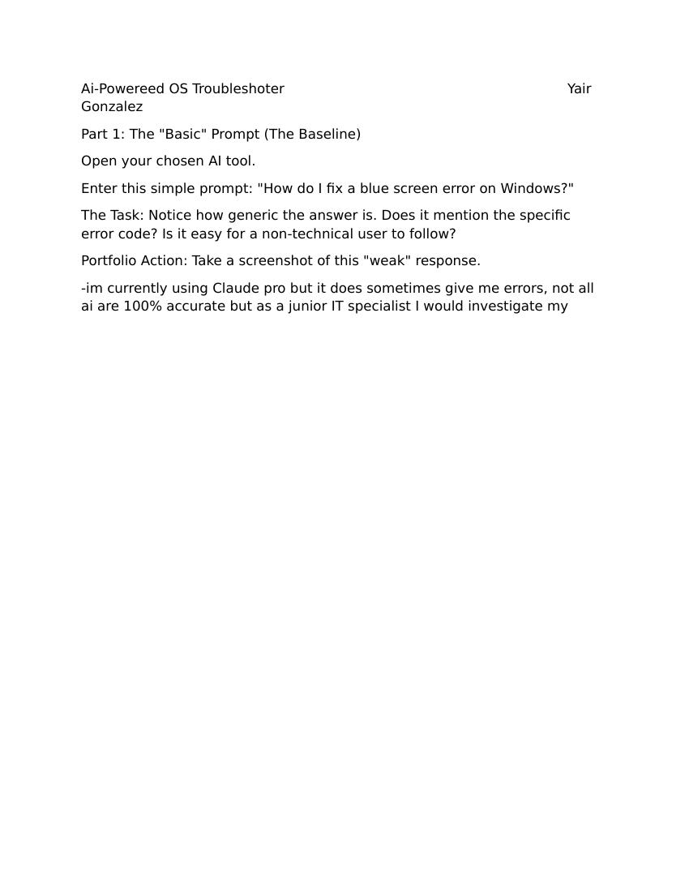

The main idea I took away from this module was that the effectiveness of a response by an AI system is based in large part upon the detail provided within the prompt; for example, a simple question regarding the solution to a "blue screen" error will result in a broad response, whereas a well-developed prompt including context, action, specific details, and tone would provide a much better guide for resolving the issue. I have also understood that although AI systems can assist IT staff to quickly resolve issues, AI responses should be viewed skeptically and confirmed prior to providing them to end users.